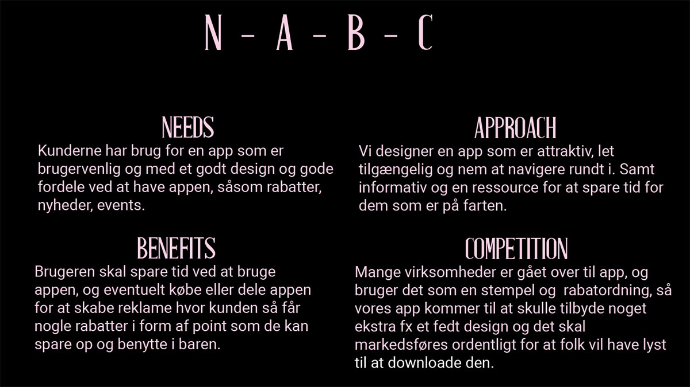
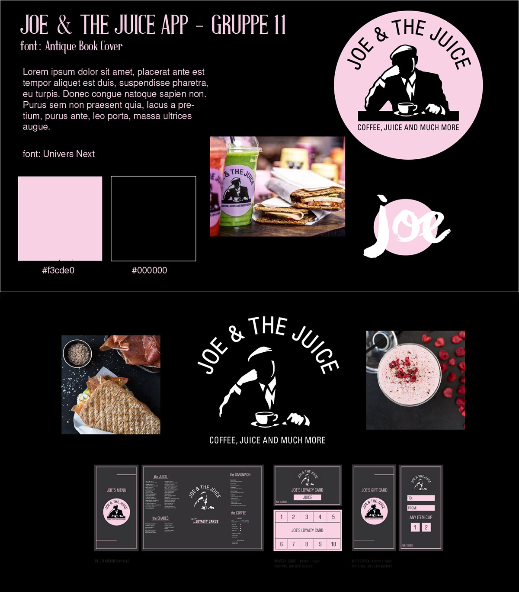

Brugerresearch
Vi har bl.a. lavet et spørgeskema omkring Joe & the juice, BERT-test og en brief fra Joe & the juice. Svarene kan læsest her.
Data-mining
Spørgeskema:
Kunde brief
Citater:
“Når jeg er i baren, bestiller jeg altid kun en juice”
“Jeg vil meget hellere have det hele på mobilen, så jeg ikke smider det væk”
“Nej, jeg har aldrig hørt om deres app før nu”
“Jeg besøger joe and the juice en gang om måneden”
Research på markedet
Experience map
Problemformulering:
De ønsker at skabe en international app, der samler alt og adskiller sig fra deres konkurrenter.
Identifikation af indsigter
Moodboard
Målgruppe
Joe & the Juice har en bred målgruppe, og har ikke specifikt fastsat nogle kundetyper de går efter.
Deres juice barer pumper med højt populært og energisk musik, deres medarbejdere er unge kompetente og friske (primært) mænd som har styr på deres juice kunstskaber og arbejder på høj tryk. Designet i deres forretninger og det image som de fremviser som er en urban stil, tiltrækker mange forskellige kundesegmenter der vil have en lidt anden oplevelse end en rolig cafe tur. Joe & the juice er en kombination af en hip bar med deres høje musik og en cafe som specialisere sig indenfor juice og lette retter samt kaffe. Fælles for målgruppen de fanger med deres koncept, er nogle som kan lide at nyde sin drikke eller sandwich i lidt anderledes og kombineret miljø. Udefra deres hjemmeside har de også samme koncept, med mange ting som bliver vist på en gang, videoer, blogindlæg, nyheder og mere til, som også deler den samme urban stil.